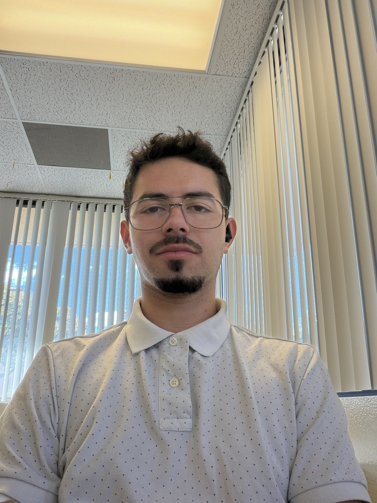

Computer science student
Building ideas.
Learning by doing.
Hi, I’m Isaiah Vander Wagen.
I’m pursuing a bachelor’s degree in computer science. This portfolio brings together my coursework, projects, and growth as I learn to build useful, approachable technology.

Focus
Computer science student
Currently
Bachelor’s in computer science · In progress
A little perspective
Good design starts with people.
Selected work
Ideas at play.
Code in progress.

Java · Swing · Group project01
Super Chess
A queen with an unexpected move. My contribution: the teleport ability and mouse-driven popup menu.
In developmentExplore project ↗

Godot · GDScript · Group project02
Post Pals
A cooperative platformer. My contribution: map layout and player and enemy movement.
Playable prototypeExplore project ↗

Godot · GDScript · Individual project03
Desert Swarm
A survival shooter I developed individually, from gameplay systems to an unfinished two-player adaptation.
Prototype + 2P extensionExplore project ↗
Get in touch
Let’s start a conversation.
Questions, ideas, or a chance to collaborate.
Emailvwisaiah@gmail.com